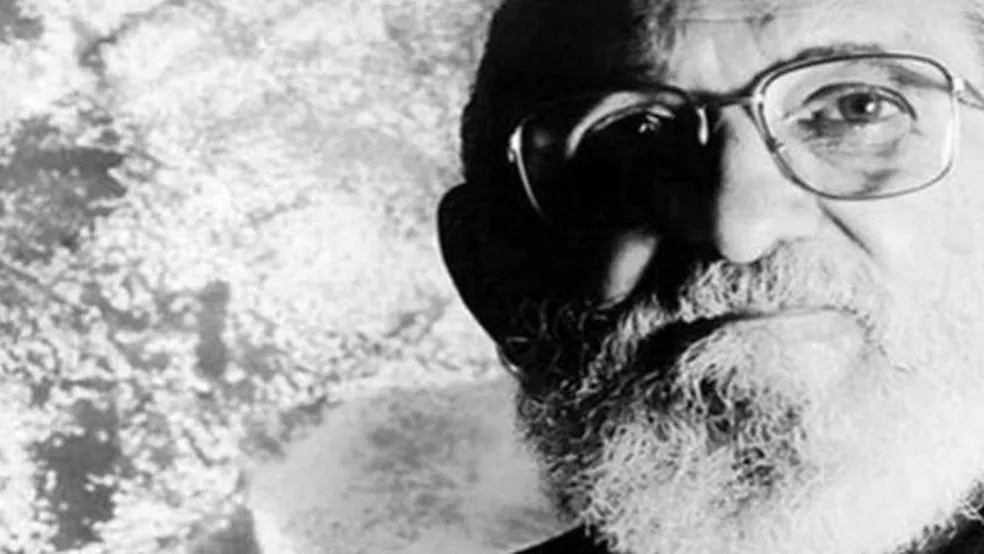
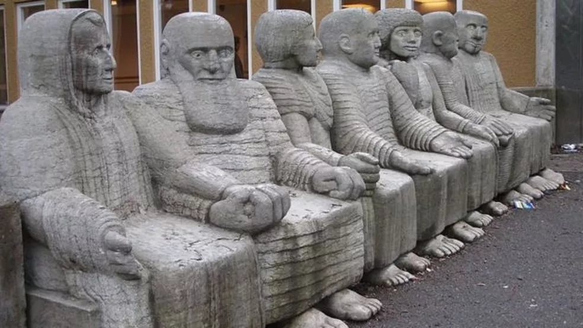

JORNAL DO ALUNO
Paulo Freire, 100 anos: como o legado do educador brasileiro é visto no exterior
Rejeitado pela atual administração, Paulo Freire está entre os autores mais citados em trabalhos acadêmicos do mundo
Esta reportagem foi publicada originalmente no dia 12 de janeiro de 2019 e republicada em 19 de setembro de 2021, data do aniversário de cem anos do nascimento de Paulo Freire.
Tratada pelo governo Bolsonaro como bode expiatório da má qualidade do ensino público brasileiro, a obra do educador Paulo Freire (1921-1997) pode ser controversa. Mas o trabalho do pedagogo e filósofo, nomeado em 2012 patrono da educação brasileira e autor de um método de alfabetização que completou 50 anos em 2013, não deixa de ser bastante relevante nas discussões mundiais sobre pedagogia.
Freire é estudado em universidades americanas, homenageado com escultura na Suécia, nome de centro de estudos na Finlândia e inspiração para cientistas em Kosovo. De acordo com levantamento do pesquisador Elliott Green, professor da Escola de Economia e Ciência Política de Londres, na Inglaterra, o livro fundamental da obra do educador, 'Pedagogia do Oprimido', escrito em 1968, é o terceiro mais citado em trabalhos acadêmicos na área de humanidades em todo o mundo.
Para especialistas em educação ouvidos pela BBC News Brasil, entretanto, a raiz da controvérsia em torno da pedagogia de Paulo Freire não é sua aplicação em si - mas o uso político-partidário que foi feito dela, historicamente e, mais do que nunca, nos dias atuais. "Li a maior parte dos livros dele. Minha tese de doutorado foi amplamente baseada em seus ensinamentos. Tenho aplicado seu método de várias maneiras em minha carreira profissional, na prática e na pesquisa", afirmou a pedagoga Eeva Anttila, professora da Universidade de Artes de Helsinque, na Finlândia.
"A maior vantagem de sua metodologia é a abordagem anti-opressiva e não autoritária, a pedagogia dialógica e respeitosa que ele promoveu. O problema é que suas ideias têm sido usadas para fins políticos - o que, em meu entendimento, nunca foi seu propósito inicial", disse a finlandesa.
Freire tornou-se conhecido a partir do início dos anos 1960. Ele desenvolveu um método de alfabetização de adultos baseado nos contextos e saberes de cada comunidade, respeitando as experiências de vida próprias do indivíduo. Aplicou o modelo pela primeira vez em um grupo de 300 trabalhadores de canaviais em Angicos, no Rio Grande do Norte. De acordo com os registros da época, a alfabetização ocorreu em tempo recorde: 45 dias.
Homenagens pelo mundo
Referência mundial em qualidade do ensino, a Finlândia conta, desde 2007, com um espaço dedicado a discutir a obra do educador brasileiro. O Centro Paulo Freire Finlândia fica na cidade de Tampere. "É um hub para os interessados em Paulo Freire e em seu legado para tornar o mundo mais igualitário e justo", de acordo com a definição da própria instituição. Eles publicaram, online, três livros com artigos - em finlandês - analisando a obra do brasileiro. O material teve 17 mil downloads.
Há centros de estudos semelhantes, todos batizados com o nome do brasileiro, na África do Sul, na Áustria, na Alemanha, na Holanda, em Portugal, na Inglaterra, nos Estados Unidos e no Canadá. Na Suécia, Freire é lembrado em um monumento público. Localizada no subúrbio de Estocolmo, 'Depois do Banho' é uma obra em pedra-sabão esculpida entre 1971 e 1976 pela artista Pye Engström. Sentadas lado a lado, estão retratadas sete personalidades com apelo político, como o poeta chileno Pablo Neruda (1904-1973), a escritora sueca Sara Lidman (1923-2004) e a sexóloga norueguesa Elise Ottesen-Jensen (1886-1973).
Mas a obra do educador brasileiro está longe de ser unanimidade entre os países que costumam liderar o ranking Pisa (sigla em inglês para Programa Internacional de Avaliação de Estudantes). Em Cingapura, que apareceu na primeira colocação na edição 2016 da avaliação trienal realizada pela OCDE (Organização para a Cooperação e Desenvolvimento Econômico) com escolas conhecidas por adotar um método linha-dura, a BBC News Brasil procurou a mais importante instituição de ensino superior do país para saber se algum pesquisador comentaria a obra do brasileiro Paulo Freire.
Professor destacado pela assessoria de comunicação da Universidade Nacional de Cingapura para atender à reportagem, Kelvin Seah disse que "não era a melhor pessoa para comentar sobre Paulo Freire". "Eu não sou familiarizado com seu método", afirmou.
Convidado a comentar sobre qual seria o método mais adequado ao contexto brasileiro, o especialista recomendou que os gestores analisassem caso a caso. "O método mais apropriado para os alunos em uma escola depende do perfil dos alunos da escola, do treinamento prévio recebido pelos professores, bem como dos recursos de instrução e financeiros disponíveis para a escola."
Pedagogia do diálogo nos Estados Unidos
Em artigo acadêmico analisando o legado de Paulo Freire pelo mundo, o professor de filosofia da educação da Universidade da Califórnia, nos Estados Unidos, Ronald David Glass aponta que o mérito de Paulo Freire está no método que valoriza a "consciência crítica, transformadora e diferencial, que emerge da educação como uma prática de liberdade".
"Paulo Freire viveu sua vida no espaço desta consciência; é por isso que inspirou e energizou pessoas no mundo inteiro, e é por isso que seu legado se prolongará muito além de qualquer horizonte que possamos enxergar agora", escreveu o professor. "Freire sempre estava buscando se tornar mais humano, tornar possível que outros fossem mais humanos e, se acolhermos esta busca com tanto amor e determinação quanto ele, então uma maior medida de justiça e democracia estará ao alcance."
Professor da Faculdade de Educação da Universidade Cristã do Texas, Douglas J. Simpson causou certa polêmica no meio acadêmico ao publicar, anos atrás, um artigo intitulado 'É Hora de Engavetar Paulo Freire?'. "Na verdade, não acho que suas ideias devam ser arquivadas", esclareceu ele à BBC News Brasil. "Meu texto foi pensado para atrair a atenção daqueles que acham que sempre estamos recorrendo a Freire. Pessoalmente, acho importante descobrir de novo ou pela primeira vez por que precisamos combinar uma forte paixão reflexiva 'freireana', de respeito e amor, a pessoas carentes de justiça pessoal."
Simpson afirma que a pedagogia baseada no diálogo é fundamental "para que a educação e a democracia prosperem, ou pelo menos sobrevivam". Ele culpa justamente a falta de diálogo pelo fato de as sociedades - e as escolas - estarem fortemente polarizadas politicamente. "Não temos sido efetivamente ensinados a praticar o diálogo nas escolas, muito menos nos governos." Para o professor, Paulo Freire ensinou, acima de tudo, que precisamos aprender "a ouvir, a entender e a respeitar uns aos outros" e a "trabalhar juntos nos problemas".
Considerando o contexto brasileiro, Simpson acredita que não deveria haver uma padronização - ou seja, que as escolas não deveriam seguir todas o mesmo método pedagógico. "As escolas precisam de culturas e responsabilidades que se baseiem em uma ética profissional, políticas e práticas meritórias", disse. Para ele, os métodos são necessários, "mas devem ser vistos como revisáveis, porque as escolas, sociedades, trabalhos e aprendizados são dinâmicos". "A padronização nas escolas muitas vezes leva a uma inércia indevida, de mesmice, de regulamentação estéril", complementou.
Nos anos 1970, o pedagogo John L. Elias, então professor da Universidade de Nova Jersey, escreveu muito a respeito de Paulo Freire. O educador brasileiro foi tema de sua tese de doutorado. Em texto de 1975, Elias apontou "sérios problemas no método" do brasileiro.
"A teoria da aprendizagem de Freire está subordinada a propósitos políticos e sociais. Tal teoria se abre para acusações de doutrinação e manipulação", afirmou ele. "A teoria de Freire da aprendizagem é doutrinária e manipuladora?", provocou.
Elias apontou que o educador brasileiro via "os sistemas educacionais do Terceiro Mundo como o principal meio que as elites opressoras usam para dominar as massas". "Conhecimento e aprendizado são políticos para Freire, porque eles são o poder para aqueles que os geram, como são para aqueles que os usam", argumentou.
Professora de Educação Internacional e Comparada na Faculdade dos Professores da Universidade Columbia, nos Estados Unidos, Regina Cortina já abordou a metodologia de Paulo Freire em diversos estudos sobre educação na América Latina, mas disse à BBC News Brasil que não se sentia "confortável" em comentar o tema no momento "por causa das mudanças administrativas no Brasil". Cortina afirmou, por meio da assessoria de imprensa da universidade, que não é possível vislumbrar com clareza "como as coisas vão seguir nas escolas brasileiras".
Quais as ideias de Freire?
Para Freire, o ensino ocorre a partir do diálogo entre professor e aluno, desenvolvendo assim capacidade crítica e preparando os estudantes para sua emancipação social. No jargão do meio, o método Freire é o oposto ao conceito "bancário" de educação - aquele no qual o professor "deposita" o conhecimento nas mentes dos alunos. Para Freire, a educação é construída em conjunto.
O método Paulo Freire chegou a ser adotado pelo governo de João Goulart (1919-1976) em esforços para alfabetização de adultos. Com a ditadura militar, entretanto, o educador passou a ser perseguido, chegou a ser preso por 70 dias e viveu no exílio na Bolívia e no Chile. Após a publicação da 'Pedagogia do Oprimido', em 1968, Freire foi convidado para ser professor visitante na Universidade Harvard, nos Estados Unidos.
Reconhecido desde 2012 como o Patrono da Educação Brasileira, Paulo Freire é considerado o brasileiro mais vezes laureado com títulos de doutor honoris causa pelo mundo. No total, ele recebeu homenagens em pelo menos 35 universidades, entre brasileiras e estrangeiras, como a Universidade de Genebra, a Universidade de Bolonha, a Universidade de Estocolmo, a Universidade de Massachusetts, a Universidade de Illinois e a Universidade de Lisboa. Em 1986, Freire recebeu o Prêmio Educação para a Paz, concedido pela Unesco, a Organização das Nações Unidas para a Educação, Ciências e Cultura.
Há instituições de ensino que seguem o método Paulo Freire em diversos países. É o caso da Revere High School, escola em Massachusetts que em 2014 foi avaliada como a melhor instituição pública de Ensino Médio nos Estados Unidos. Em Kosovo, um grupo de jovens acadêmicos criou um projeto de ciência cidadã inspirado na pedagogia crítica do brasileiro. Os participantes recebem um kit para monitorar as condições ambientais e, assim, juntos, pressionar o governo por melhorias na área.
"Acredito que seria ótimo que a pedagogia em qualquer escola de qualquer país partisse do pensamento de Freire", comentou a pedagoga finlandesa Anttila. "Especialmente no Brasil, dada a atual situação política e a história do país." Ela diz que um método de ensino, para funcionar bem, precisa levar em conta as situações de vida dos alunos. "Não acredito em pedagogia autoritária. As aulas não precisam ser autoritárias. É preciso diálogo, discussão, negociação, exploração. Construir conhecimento para que haja capacidade de expressar ideias e ouvir os outros. Eis a chave para a democracia. E a educação democrática é a única maneira de salvaguardar uma sociedade democrática", declarou.
